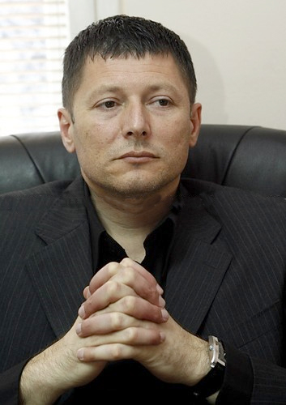

ABAF Council Member: Slobodan Brankovic / SRB (General Secretary Serbian Athletic Federation)

Curriculum Vitae:
- Name: BRANKOVIC
- First name: Slobodan
- Date of birth: 1 October 1967
- Nationality: Serbian
- Profession: Sport Management
- He became involved in athletics at an early age and is today one of the biggest Serbian athletic stars. He has been a professional athlete for 20 years. During his rich athletic career he has won innumerable medals. He is the Balkans 100m, 200m and 400m champion several times over. However, his biggest achievement was the gold medal at 1992 European Indoor Championship in Genoa. He is still the Serbian record holder at 100m, 400m and 4x400m events.
- After the end of his professional career, Brankovic completed his professional education at the Belgrade Faculty for management in Sport and now hold the Bachelor degree in sports management. He has been one of the organizers of “Memorial Artur Takac” in 2006 and 2007 when he was elected for General Secretary of Athletic Federation of Serbia, which position he still holds today.
Head Office:
75, Vassil Levski Blvd., 1040 Sofia, Bulgaria
phones: (+359 2) 9885462; (+359 2) 9300669
fax: (+359 2) 9880714
headoffice@balkan-athletics.eu